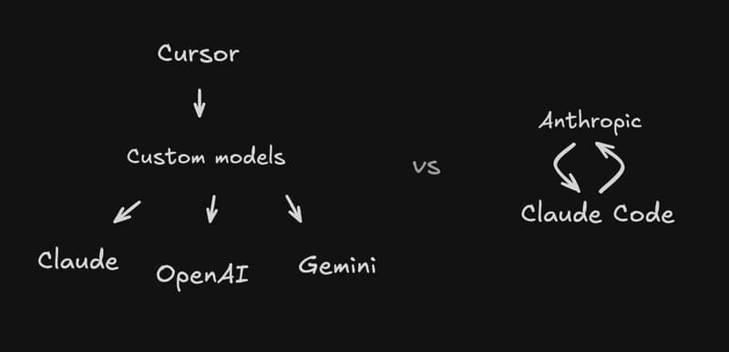

AI 代理的有效上下文工程
上下文工程的全面指南——从提示工程到管理可用于 LLM 的整体状态，以构建可控、高效的代理。学习优化上下文窗口、管理注意力预算和设计高效代理架构的策略。
AI 代理的有效上下文工程
在应用 AI 领域关注提示工程几年后，一个新术语开始崭露头角：上下文工程。使用语言模型构建应用的重点正在从寻找正确的词语和短语转向回答更广泛的问题："什么样的上下文配置最有可能产生我们期望的模型行为？"
上下文指的是在对大语言模型（LLM）进行采样时包含的令牌集。当前的工程问题是优化这些令牌的效用，以应对 LLM 的固有约束，从而持续实现期望的结果。有效地管理 LLM 通常需要以上下文为导向的思维——换句话说：考虑在任何给定时间对 LLM 可用的整体状态以及该状态可能产生的潜在行为。
在本文中，我们将探讨新兴的上下文工程艺术，并为构建可控、高效的代理提供精炼的心理模型。
上下文工程 vs. 提示工程
在 Anthropic，我们将上下文工程视为提示工程的自然演进。提示工程指的是为优化结果而编写和组织 LLM 指令的方法。上下文工程则是指在 LLM 推理过程中策划和维护最优令牌集（信息）的策略集，包括提示之外可能出现在那里的所有其他信息。
在 LLM 工程的早期，提示是 AI 工程工作的主要组成部分，因为除了日常聊天交互之外的大多数用例都需要为一次性分类或文本生成任务优化的提示。顾名思义，提示工程的主要关注点是如何编写有效的提示，特别是系统提示。然而，随着我们向工程化更强大的代理发展，这些代理在多个推理回合和更长的时间范围内运行，我们需要管理整个上下文状态（系统指令、工具、模型上下文协议（MCP）、外部数据、消息历史等）的策略。
在循环中运行的代理会产生越来越多可能与下一轮推理相关的数据，这些信息必须经过周期性优化。上下文工程是从不断演化的可能信息宇宙中策划将进入有限上下文窗口的内容的艺术和科学。

与编写提示的离散任务相比，上下文工程是迭代的，策划阶段在我们每次决定传递给模型的内容时都会发生。
为什么上下文工程对构建强大代理很重要
尽管 LLM 具有速度和管理越来越多大量数据的能力，但我们观察到 LLM 与人类一样，在某种程度上会失去焦点或感到困惑。在"大海捞针"式基准测试中的研究表明了上下文腐烂的概念：随着上下文窗口中令牌数量的增加，模型从该上下文中准确回忆信息的能力会下降。
虽然某些模型表现出比其他模型更温和的退化，但这一特征在所有模型中都会出现。因此，上下文必须被视为具有递减边际回报的有限资源。就像人类一样，他们有有限的工作记忆容量，LLM 在解析大量上下文时会消耗"注意力预算"。引入的每个新令牌都会消耗一定量的预算，增加了仔细策划 LLM 可用令牌的需求。
这种注意力稀缺性源于 LLM 的架构约束。LLM 基于 Transformer 架构，该架构使每个令牌能够关注整个上下文中的每个其他令牌。这导致 n 个令牌产生 n² 个成对关系。
随着上下文长度的增加，模型捕捉这些成对关系的能力会被拉伸得很薄，在上下文大小和注意力焦点之间产生自然的紧张关系。此外，模型从训练数据分布中发展出注意力模式，其中较短的序列通常比长序列更常见。这意味着模型在上下文范围依赖方面的经验较少，并且专门用于此的参数也较少。
位置编码插值等技术允许模型通过适应最初训练的较小上下文来处理较长的序列，尽管在令牌位置理解方面会有所退化。这些因素创造了一个性能梯度而不是硬性悬崖：模型在较长的上下文中仍然非常有能力，但在信息检索和长距离推理方面的精度可能比在较短上下文中的表现有所降低。
这些现实意味着深思熟虑的上下文工程对于构建强大的代理至关重要。
有效上下文的构成
鉴于 LLM 受限于有限的注意力预算，良好的上下文工程意味着找到最小的高信号令牌集，以最大化实现某些期望结果的可能性。实施这种实践说起来容易做起来难，但在接下来的部分中，我们将概述这一指导原则在上下文不同组件中的实际含义。
Claude Code 用户的上下文工程
对于使用 Claude Code 进行 AI 辅助编程的开发人员来说，上下文工程具有特定的重要性和实际应用。Claude Code 用户可以利用上下文工程原理来优化他们的 AI 编码工作流程，提高代码质量，并减少令牌消耗。
利用 CLAUDE.md 文件进行上下文管理
Claude Code 中最强大的上下文工程工具之一是 CLAUDE.md 文件系统。这些特殊文件在开始对话时会自动引入上下文，使其成为记录 Claude 需要知道的项目特定信息的理想场所。
有效的 CLAUDE.md 文件应包括：
- 常用命令：记录常用的 bash 命令，以节省 Claude 不必询问或猜测的时间
- 代码风格指南：指定编码约定、导入偏好和格式标准
- 项目结构信息：解释存储库布局、关键目录和重要文件
- 开发环境设置：详细说明所需工具、版本要求和设置说明
- 工作流程约定：记录团队的分支、测试和部署实践
与通用系统提示不同，CLAUDE.md 文件应该是项目特定的和团队共享的。它们成为 Claude 在所有与您的代码库交互中使用的持久上下文的一部分。
CLAUDE.md 文件位置和层次结构：
Claude Code 支持多个 CLAUDE.md 文件，这些文件会根据您的当前目录自动加载：
- 项目根目录 (
CLAUDE.md)：团队共享的项目级配置，提交至 Git 供所有成员使用 - 项目根目录 (
CLAUDE.local.md)：个人本地覆盖配置，通常加入 .gitignore 避免影响他人 - 父目录 (
CLAUDE.md)：在 Monorepo 结构中自动继承的上级配置（递归向上查找） - 子目录 (
CLAUDE.md)：针对特定子模块 / 功能的独立配置（优先于父级配置加载） - 用户全局 (
~/.claude/CLAUDE.md)：用户全局默认配置，适用于所有 Claude 会话的基线设定
CLAUDE.md 文件最佳实践：
- 保持文件简洁易读（通常少于 50 行）
- 使用项目符号和清晰标题便于快速浏览
- 定期审查和更新以适应项目演进
- 包含版本特定信息以适应多活动分支项目
- 记录已弃用的做法以防止 Claude 建议过时的方法
战略性文件提及和上下文加载
Claude Code 允许您使用自然语言指令明确告诉 Claude 读取特定文件，如"读取 logging.py"或"查看认证模块"。这使您可以精细控制 Claude 在任何给定时间加载的上下文。
有效策略包括：
- 预加载关键文件：在开始复杂任务之前，让 Claude 读取最相关的文件以建立上下文
- 渐进式上下文加载：根据需要逐步加载文件，而不是一开始就用过多信息压倒 Claude
- 上下文刷新：在会话期间定期要求 Claude 重新读取已修改的文件
- 选择性文件加载：使用 Tab 自动补全功能快速引用存储库中任何位置的文件或文件夹，帮助 Claude 找到或更新正确的资源
高级文件加载技术：
- 目录分析：要求 Claude"分析 src/services/user/ 目录的结构"，然后实施更改
- 交叉文件引用：在处理相关组件时，加载多个文件以保持一致性
- 历史上下文：对于错误修复，加载当前实现和相关测试文件
- 依赖映射：加载依赖文件以了解更改如何影响系统的其他部分
管理长会话中的消息历史
Claude Code 会话会随着时间的推移积累广泛的消息历史，导致上下文膨胀和潜在的性能下降。有效的上下文工程需要主动管理这一历史。
策略包括：
- 使用
/compact命令：定期压缩对话历史，保留关键信息同时减少令牌数量。此内置功能压缩对话历史，只保留上下文摘要，从而减少 token 占用。 - 清除无关历史：使用
/clear从上下文中删除已完成的任务，当它们不再相关时。在长时间的会话中，Claude 的上下文窗口可能会充满不相关的对话、文件内容和命令。 - 分解大型任务：将复杂项目分解为较小的、专注的会话，以保持上下文清晰度。对于具有多个步骤或需要详尽解决方案的大型任务（如代码迁移、修复大量 lint 错误或运行复杂构建脚本），可以通过让 Claude 使用 Markdown 文件（甚至 GitHub 问题！）作为清单和工作草稿板来提高性能。
- 会话分段：对于多天项目，考虑启动新会话而不是携带可能不再相关的旧上下文
工具选择和上下文效率
Claude Code 的工具生态系统（MCP 服务器、自定义命令、bash 工具）直接影响上下文效率。每次工具交互都会增加到上下文窗口中，因此深思熟虑的工具选择至关重要。
最佳实践：
- 最小化工具聊天：配置工具允许列表以减少对受信任操作的权限提示。您可以自定义允许列表，以允许您知道是安全的其他工具，或者允许易于撤消的潜在不安全工具（例如，文件编辑、
git commit）。 - 使用自定义斜杠命令：创建可重用的命令模板，为常见任务提供 Claude 结构化上下文。自定义指令分为两种：用户级命令：放在
~/.claude/commands/目录下，适合所有项目通用的命令；项目级命令：放在项目根目录下的.claude/commands/目录中，适合这个项目专用的命令。 - 利用 MCP 服务器：使用模型上下文协议服务器为 Claude 提供对外部系统的结构化访问，而不会淹没上下文窗口
- 工具允许列表管理：在会话期间出现提示时选择"始终允许"，或启动 Claude Code 后使用
/permissions命令从允许列表中添加或删除工具。例如，您可以添加Edit以始终允许文件编辑，添加Bash(git commit:*)以允许 git 提交，或添加mcp__puppeteer__puppeteer_navigate以允许使用 Puppeteer MCP 服务器进行导航。
基于上下文的任务规划
Claude Code 中的有效上下文工程涉及考虑上下文限制和最佳加载模式的战略任务规划：
- 预激活方法：在要求 Claude 实施解决方案之前，先让它读取和理解相关上下文。例如，如果要重构后端模块，不要一上来就说"重构这段代码"，而是先让它阅读整个模块、分析目录结构、总结已有功能，再进入编码阶段。
- 文档优先工作流：在让模型执行任何任务之前先编写 PLAN.md。这种方法将"7 层提示栈"（工具/语言/项目/人设/组件/任务/查询）整合到 Claude 可以参考的稳定上下文的单个文档中。
- 范围收敛：实施文件白名单 + 目录黑名单 + 最大更改行数限制，以将模型不确定性包含在定义的边界内，而不是散落在聊天记录中。
- Diff 驱动开发：只接受统一补丁；禁止整文件重写或"扫描代码库"。这种方法使回滚变得轻松，因为一切都以统一补丁交付。
上下文窗口优化技术
Claude Code 提供了几种优化上下文窗口使用的方法：
/compact命令：压缩对话历史，只保留上下文摘要以减少令牌使用，同时保留基本信息/clear命令：在开始新的不相关任务时完全清除对话历史- 会话分段：将大型项目分解为多个专注的会话而不是一个长时间运行的会话
- 选择性文件加载：仅加载与即时任务最相关的文件而不是整个代码库
- 清单和草稿板：对于大型任务，使用 Markdown 文件作为清单和工作草稿板，以将不需要保留在对话历史中的上下文化

在光谱的一端，我们看到脆弱的 if-else 硬编码提示，而在另一端，我们看到过于通用或错误地假设共享上下文的提示。
系统提示
我们建议将提示组织成不同的部分（如 <background_information>、<instructions>、## 工具指导、## 输出描述 等），并使用 XML 标记或 Markdown 标题等技术来划分这些部分，尽管随着模型能力的提高，提示的确切格式可能变得不那么重要。
无论您决定如何构建系统提示，您都应该努力寻找能够完全概述期望行为的最小信息集。（请注意，最小并不一定意味着短；您仍然需要在前面提供足够的信息以确保代理遵循期望的行为。）最好从使用可用的最佳模型测试最小提示开始，看看它在任务上的表现如何，然后根据初始测试中发现的失败模式添加清晰的指令和示例来提高性能。
工具
工具允许代理与其环境交互并在工作时拉入新的额外上下文。因为工具定义了代理与其信息/操作空间之间的契约，所以工具促进效率非常重要，既要返回令牌高效的信息，又要鼓励高效的代理行为。
在"为 AI 代理编写工具——使用 AI 代理"中，我们讨论了构建 LLM 理解良好且功能重叠最小的工具。类似于设计良好的代码库的功能，工具应该是自包含的、对错误具有鲁棒性的，并且对其预期用途极其清晰。输入参数同样应该是描述性的、明确的，并且要发挥模型的固有优势。
我们看到的最常见的失败模式之一是臃肿的工具集，涵盖太多功能或导致关于使用哪个工具的模糊决策点。如果人类工程师无法明确说明在给定情况下应该使用哪个工具，就不能期望 AI 代理做得更好。正如我们稍后将讨论的，为代理策划最小可行的工具集也可以在长期交互中实现更可靠的上下文维护和修剪。
示例
提供示例，也称为少样本提示，是一个众所周知的最佳实践，我们继续强烈建议。然而，团队通常会在提示中塞入一长串边缘情况，试图阐述 LLM 应该遵循的每条可能规则来完成特定任务。我们不建议这样做。相反，我们建议努力策划一组多样化、典型的示例，有效地展示代理的期望行为。对于 LLM 来说，示例就是"值千言万语的图片"。
消息历史
消息历史是代理在多个回合上运行的上下文的关键组成部分。然而，简单地将所有先前的消息附加到上下文窗口很少是最优的。有效的上下文工程需要深思熟虑地策划消息历史，考虑以下因素：
- 相关性：哪些先前的交互仍然与当前任务相关？
- 时效性：信息需要多新才能保持有用？
- 压缩：能否总结先前的交互以保留关键信息同时减少令牌数量？
我们对上下文不同组件（系统提示、工具、示例、消息历史等）的总体指导是深思熟虑，保持上下文信息丰富但紧凑。现在让我们深入了解运行时的动态上下文检索。
上下文检索和代理搜索
在"构建有效的 AI 代理"中，我们强调了基于 LLM 的工作流和代理之间的区别。自从我们写那篇文章以来，我们倾向于使用一个简单的代理定义：LLM 自主地在循环中使用工具。
与客户合作，我们看到该领域正在汇聚到这个简单的范式上。随着底层模型变得更加强大，代理的自主性水平可以扩展：更智能的模型允许代理独立导航复杂的解决问题空间并从错误中恢复。
我们现在看到工程师思考如何为代理设计上下文的方式发生了转变。如今，许多 AI 原生应用程序采用某种形式的基于嵌入的推理前检索来呈现代理推理的重要上下文。随着该领域向更具代理性的方法过渡，我们越来越多地看到团队用"即时"上下文策略来增强这些检索系统。
除了存储效率之外，这些引用的元数据还提供了一种机制来高效地跟踪和管理影响代理行为的信息来源。这对于调试、审计和确保受监管环境中的合规性特别有价值。
Claude Code 中的动态上下文检索
Claude Code 用户可以通过深思熟虑的交互模式实现动态上下文检索策略。与其预先加载所有可能的项目文件，不如基于任务需求进行渐进式上下文加载的有效 Claude Code 工作流程。
Claude Code 用户的关键策略：
- 战略性文件读取：与其让 Claude"读取整个代码库"，不如根据即时任务需求有选择地加载文件
- 基于搜索的发现：使用自然语言查询如"查找所有处理用户认证的文件"让 Claude 发现相关文件
- 上下文刷新：在开发过程中定期要求 Claude 重新读取可能已更改的文件
- 基于 URL 的上下文加载：将特定 URL 与您的提示一起粘贴，供 Claude 获取和阅读。为了避免对相同域（例如，docs.foo.com）的权限提示，请使用
/permissions将域添加到您的允许列表中。 - 数据集成：通过多种方法将数据传递给 Claude：直接复制并粘贴到您的提示中（最常见的方法）、通过管道传输到 Claude Code（例如，
cat foo.txt | claude）、告诉 Claude 通过 bash 命令、MCP 工具或自定义斜杠命令拉取数据，或者让 Claude 读取文件或获取 URL（对图片也有效）。
Claude Code 探索文件系统的能力使其特别适合动态上下文检索。用户可以要求 Claude"搜索与支付处理相关的文件"，Claude 将主动探索代码库以识别和加载相关文件。
高级上下文检索模式：
- 多源上下文加载：在单个工作流中结合文件读取、URL 获取和数据管道。例如，将日志文件通过管道传输，然后告诉 Claude 使用工具拉入额外的上下文以调试日志。
- 渐进式发现：从高级查询开始，逐步深入到具体细节。例如，首先询问"此项目支持哪些认证方法？"然后跟进"显示 JWT 认证的实现。"
- 交叉引用加载：在处理相互关联的组件时，加载相关文件以保持一致性。例如，在修改 API 端点时，还加载相应的服务层和数据访问组件。
- 历史上下文检索：对于错误修复，加载当前实现和历史上下文，如相关提交或问题描述。
上下文检索最佳实践：
- 具体明确：Claude 可以推断意图，但它无法读心。具体性会带来更好的期望一致性。使用精确的指令而不是模糊的请求，例如不要说"为 foo.py 添加测试"，而要说"为 foo.py 编写一个新的测试用例，覆盖用户未登录的边缘情况。避免使用模拟。"
- 提供参考点：当使用设计模型作为 UI 开发的参考点，或使用视觉图表进行分析和调试时，向 Claude 提供图像。这对于视觉任务特别有用。
- 使用清单：对于复杂任务，让 Claude 创建和维护要处理的项目清单，这既作为上下文管理工具，也作为进度跟踪器。
- 外部化上下文：对于大型任务，使用外部文件（Markdown 文档、GitHub 问题）作为工作草稿板，以保持主要对话专注于高层方向。
动态上下文检索
代理不是预先加载所有可能的上下文，而是采用动态检索策略，根据需要获取相关信息。这种方法提供了几个优势：
- 令牌效率：只有相关信息消耗上下文窗口空间
- 新鲜度：信息可以实时检索，确保上下文是最新的
- 可扩展性：代理可以访问庞大的知识库而不会受到上下文窗口限制的约束
- 相关性：检索的信息可以根据手头的特定任务进行定制
动态上下文检索的关键策略包括：
- 语义搜索：使用嵌入来查找上下文相关的信息
- 元数据过滤：基于文档属性（日期、来源、类型等）缩小检索范围
- 混合检索：结合多种检索方法以获得更好的结果
- 递归检索：使用代理自己的分析来指导后续检索操作
上下文窗口管理
随着代理在更长的时间范围内运行，管理上下文窗口变得越来越重要。有效的策略包括：
- 摘要：在保留关键信息的同时压缩先前的交互
- 遗忘机制：系统地删除过时或不相关的信息
- 分层上下文：将上下文组织成重要性层次
- 注意力引导：使用明确的指令引导模型的焦点
Claude Code 中的上下文窗口管理
Claude Code 提供了特定的工具和命令来管理上下文窗口限制：
/compact命令：此内置功能压缩对话历史，保留上下文摘要以减少令牌使用，同时保留基本信息。在长时间的会话中，Claude 的上下文窗口可能会充满不相关的对话、文件内容和命令。这会降低性能，有时还会分散 Claude 的注意力。/clear命令：在开始新的不相关任务时完全清除对话历史。这消除了可能不再相关的累积上下文，并为新任务提供了一个全新的开始。- 会话分段：将大型项目分解为多个专注的会话而不是一个长时间运行的会话。对于多天项目，考虑启动新会话而不是携带可能不再相关的旧上下文。
- 选择性文件加载：仅加载与即时任务最相关的文件而不是整个代码库。与其让 Claude"读取整个代码库"，不如根据即时任务需求有选择地加载文件。
- 清单和草稿板：对于具有多个步骤或需要详尽解决方案的大型任务（如代码迁移、修复大量 lint 错误或运行复杂构建脚本），可以通过让 Claude 使用 Markdown 文件（甚至 GitHub 问题！）作为清单和工作草稿板来提高性能。
高级上下文窗口管理技术：
- 基于任务的上下文边界：为每个任务定义清晰的边界，并在任务转换时使用
/clear以防止上下文泄露。 - 上下文归档：对于复杂的多阶段项目，在自然断点处归档上下文，记录关键决策并为新阶段启动新会话。
- 分层上下文加载：分层加载上下文，从高级架构信息开始，然后根据需要深入到具体实现细节。
- 外部上下文存储：使用外部文档（PLAN.md、GitHub 问题、Markdown 文件）存储详细规范和参考信息，保持主要对话专注于高层方向和即时实现关注点。
- 定期上下文审计：定期审查正在维护的内容，并删除不再与当前任务相关的信息。
对于长时间运行的开发会话，我们建议定期使用 /compact 来保持性能，同时保留最重要的上下文。当切换到完全不同的任务时，使用 /clear 可以帮助 Claude
上下文工程工具和技术
1. 自定义斜杠命令
创建可重用的命令模板可以显著提高效率：
# .claude/commands/test.md
Please create comprehensive tests for: $ARGUMENTS
Test requirements:
- Use Jest and React Testing Library
- Place tests in __tests__ directory
- Mock Firebase/Firestore dependencies
- Test all major functionality
- Include edge cases and error scenarios使用 /test MyButton 可以快速生成针对特定组件的测试。
2. 钩子系统
Claude Code 的钩子系统允许在各种生命周期事件中执行自定义命令：
{
"hooks": [
{
"matcher": "Edit|Write",
"hooks": [
{
"type": "command",
"command": "prettier --write \"$CLAUDE_FILE_PATHS\""
}
]
}
]
}上下文工程的未来方向
更大的上下文窗口
即使上下文窗口变得更大，上下文工程仍将很重要，但策略将从严格的限制管理转向更复杂的组织和优先级排序。
自动化上下文管理
我们预计在上下文策划方面会看到越来越多的自动化，AI 系统在没有明确人工干预的情况下管理自己的上下文会变得更好。
多模态上下文
随着 AI 系统包含更多模态（图像、音频、视频），上下文工程需要考虑异构信息类型及其交互。
个性化上下文
上下文工程将越来越多地涉及根据各个模型的偏好和能力定制信息呈现，从一刀切的方法中脱离出来。
结论
上下文工程代表了我们思考如何使用大型语言模型构建应用的根本性转变。我们不再仅仅专注于制作完美的提示词，而是必须考虑模型运行的整体信息环境。
有效的上下文工程需要平衡多个相互竞争的关注点：提供足够的信息来完成任务，同时避免信息过载，保持上下文的新鲜度，同时保留重要的历史信息，并确保高效的令牌使用，同时最大化模型的有效性。
对于 Claude Code 用户来说，掌握上下文工程意味着学会在拥有直接访问代码库的 AI 助手的强大功能与上下文窗口限制和注意力预算的约束之间取得平衡。通过战略性地管理 Claude 加载什么信息、何时加载以及信息在上下文中停留多长时间，开发人员可以实现更可靠、高效和有效的 AI 辅助编码体验。
Claude Code 中上下文工程入门
- 从小处开始：从专注的任务和最小的上下文开始，根据需要逐渐扩展。从清晰的任务描述开始，而不是预先加载所有项目文件。
- 使用 CLAUDE.md 文件：记录 Claude 需要知道的项目特定信息。在不同级别（项目根目录、子目录、用户全局）创建 CLAUDE.md 文件层次结构，以在每个级别提供适当的上下文。
- 利用内置工具：使用
/compact和/clear来管理上下文窗口使用。在长时间会话期间定期使用/compact，在切换到不相关的任务时使用/clear。 - 实施战略性加载：根据需要逐步加载文件，而不是一次性加载所有文件。使用制表符补全快速引用文件，并提供关于 Claude 应该读取和理解的内容的具体指令。
- 监控性能：关注令牌使用和任务完成率。使用
/cost和ccusage监控消耗并识别优化机会。 - 为演进而规划：使用以文档为先的工作流和 PLAN.md 文件，并维护开发会话的结构化日志。在开始新方法时归档上下文，而不是继续失败的尝试。
- 迭代和改进：根据结果不断优化您的上下文管理策略。记录失败并分析它们以改进未来的上下文工程方法。
高级上下文工程模式
当您在 Claude Code 中变得更加熟练时，请考虑实施这些高级模式：
- 多会话上下文管理：使用 git worktrees 在项目的不同部分同时运行多个 Claude Code 会话，每个会话专注于其独立的任务。
- 外部上下文系统：通过 MCP 服务器和自定义斜杠命令将外部知识管理系统与 Claude Code 集成，以提供对组织知识的结构化访问。
- 自动化上下文优化：开发脚本和工作流，根据任务模式和历史性能数据自动管理上下文加载、压缩和清除。
- 上下文版本控制：为您的上下文管理策略实施版本控制，跟踪不同上下文工程方法对任务成功率和效率的影响。
随着该领域不断发展，我们鼓励从业者以与对待其他 AI 系统设计方面相同的严谨性和创造性来对待上下文工程。当我们仔细考虑代理运行的上下文时，我们今天构建的代理将变得更加强大、可靠并与人类意图保持一致。
通过将上下文作为我们工程实践中的首要关注点，我们可以释放 AI 代理的全部潜力，同时避免天真的上下文管理方法带来的陷阱。
有关使用 Claude Code 构建的更多信息，请参见我们的 Claude Code 最佳实践、Claude Code 完整指南 和 Claude Code 生产工作流指南。
本文基于 Anthropic 工程团队的见解以及他们在实际应用中构建和部署 AI 代理的经验。有关使用 Claude 构建的更多信息，请访问我们的开发者文档。